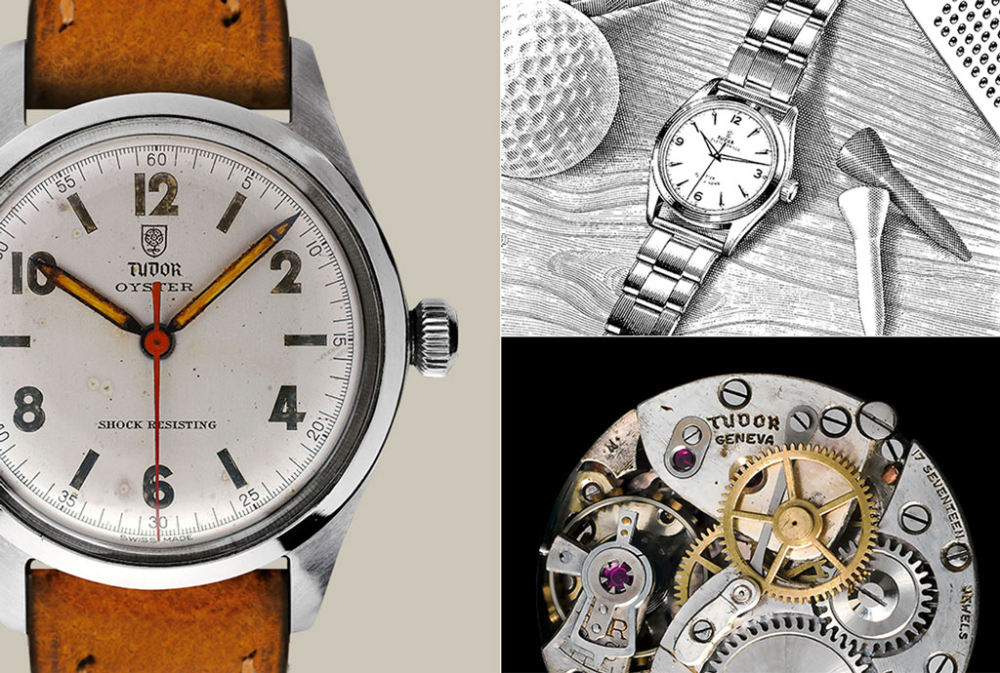

inside TUDOR
BIRTH OF THE BRAND
In February 1926, the house of “Veuve de Philippe Hither", a watch dealer and maker, registered the trademark "The Tudor” established in
Geneva for Rolex founder Hans Wilsdorf. Later, in 1936, the house transferred the brand to Wilsdorf, Just after the Second World War, Hans
Wilsdorf knew that the time hac come to expand and give the brand a proper identity ofits own. On 6 March 1946, he created “Montres
TUDOR S.A.", specialising in models for both men and women. Rolex would guarantee the technical, aesthetic and functional characteristics,
along with the distribution and after-sales service,
TUDOR history
HANS WILSDORP’S INTUITION

"For some years now, I have been considering the idea of making a watch that our agents could sell at a more modest price than our Rolex watches, and yet one
that would attain the standard of dependability for which Rolex is famous. I decided to form a separate company, with the object of making and marketing this
new watch. It is called the TUDOR watch company."